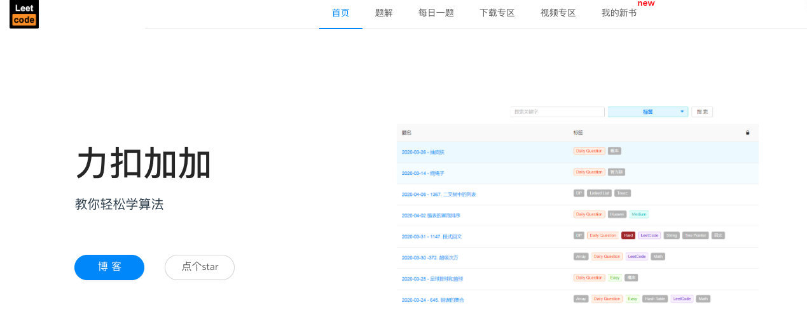
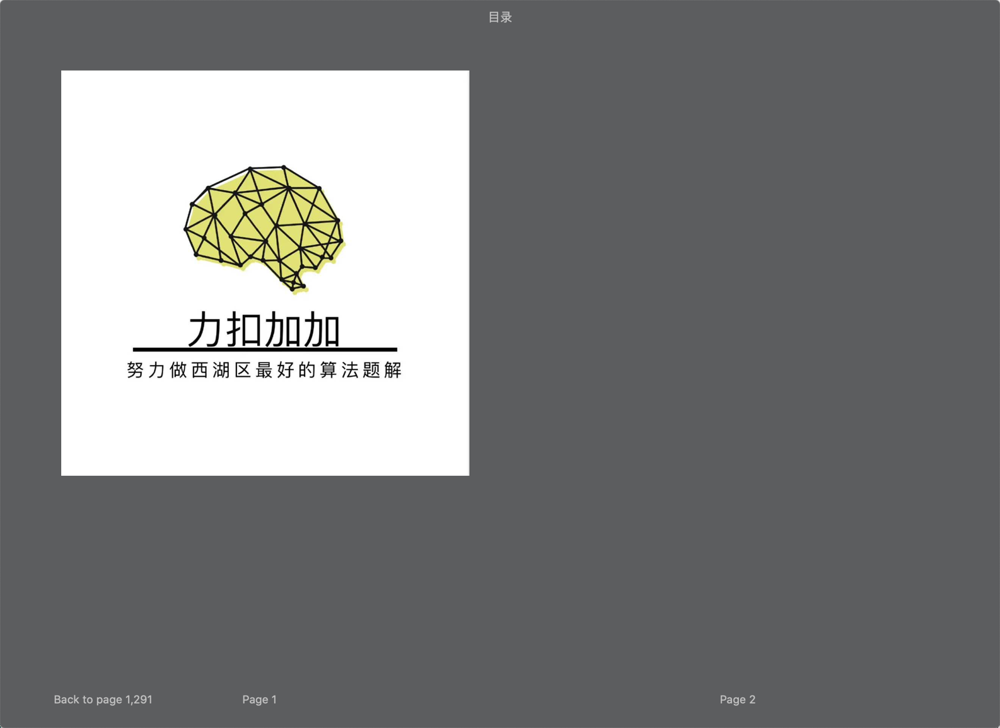
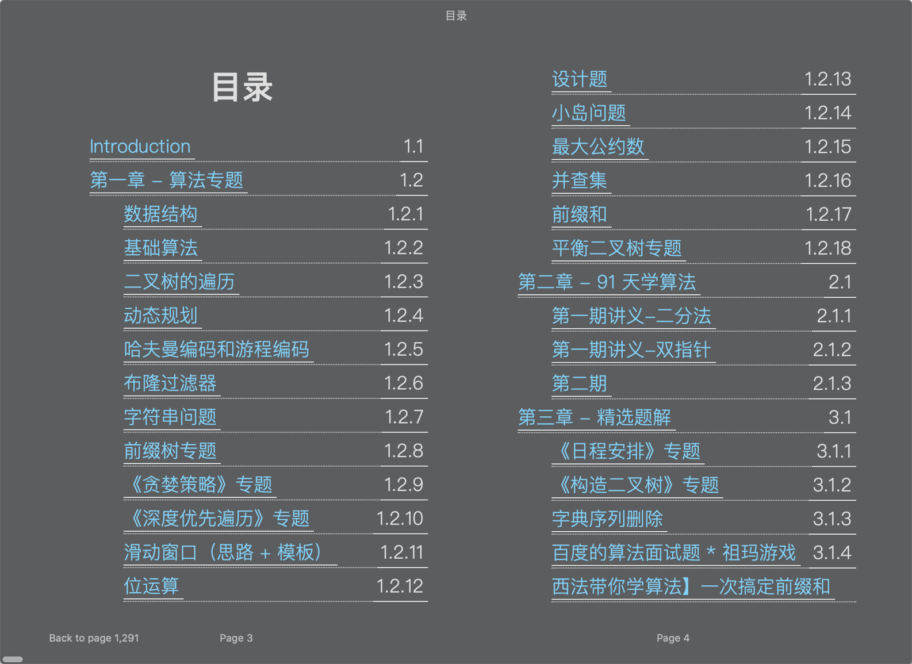
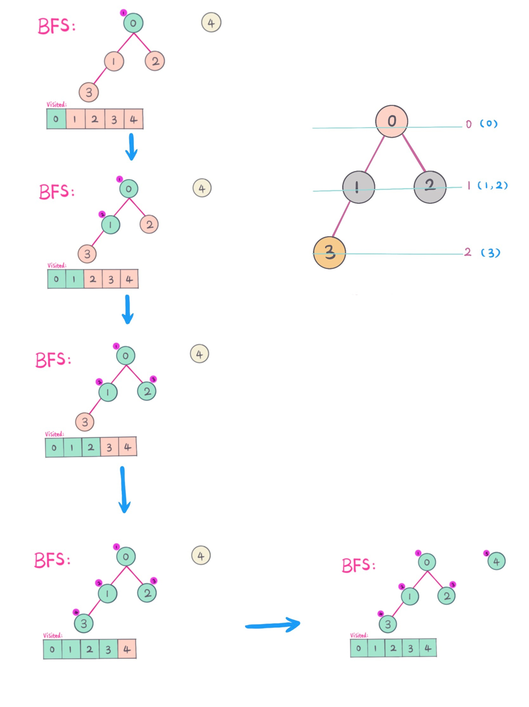
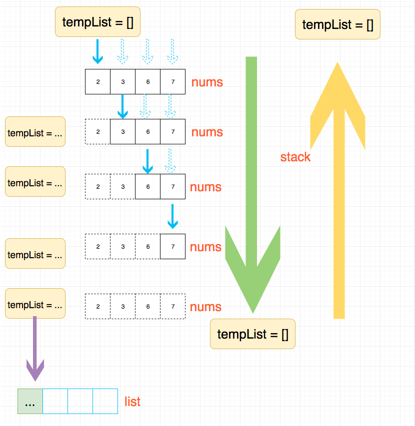
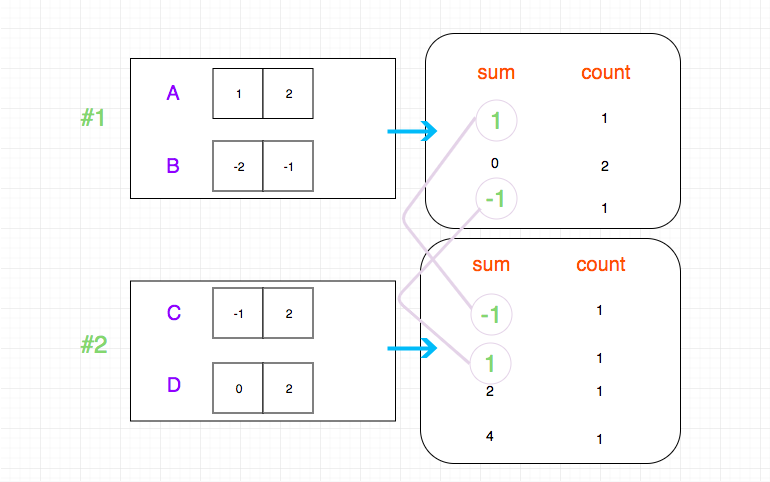

Introduction
LeetCode111
简体中文 | English
2233444哥哥啊244方法ggegeggeex1111
- 2019-07-10 ：纪念项目 Star 突破 1W 的一个短文， 记录了项目的"兴起"之路，大家有兴趣可以看一下，如果对这个项目感兴趣，请点击一下 Star， 项目会持续更新，感谢大家的支持。
- 2019-10-08: 纪念 LeetCode 项目 Star 突破 2W，并且 Github 搜索“LeetCode”，排名第一。
- 2020-04-12: 项目突破三万 Star。
- 2020-04-14: 官网
力扣加加上线啦 💐💐💐💐💐，有专题讲解，每日一题，下载区和视频题解，后续会增加更多内容，还不赶紧收藏起来？地址：http://leetcode-solution.cn/

前言
这是我将我的所有公开的算法资料整理的一个电子书，全部题目信息中文化，以前会有一些英文描述，感谢 @CYL 的中文整理。


我写这本电子书花费了大量的时间和精力，除了内容上的创作，还要做一些电子书的排版，以让大家获得更好的阅读体验。光数学公式的展示，我就研究了多个插件的要源码，并魔改了一下才使得导出的电子书支持 latex。 不过有些动图，在做成电子书的时候自然就变没了，如果需要看动图的， 可以去我的公众号《力扣加加》或者我的 leetcode 题解仓库看。
由于是电子书，因此阅读体验可能会更好， 但是相应地就不能获得及时的更新，因此你可以收藏一下我的同步电子书的网站 西法的刷题秘籍 - 在线版。后期可能将每日一题， 91 天学算法其他章节的讲义等也整理进来。
电子书有更新我也会在公众号《力扣加加》进行通知， 感兴趣的同学可以关注一下。
目前导出了四种格式，可惜的是这几种格式都有自己的不足：
- 在线版。 实时更新，想要及时获取最新信息的可以用在线版。
- html。 方便大家在线观看，由于是 html ，实际上大家也可以保存起来离线观看。
- pdf。可使用 pdf 阅读器和浏览器（比如谷歌）直接观看，阅读体验一般，生成的目录不能导航。
- mobi。 下载一个 Kindle 客户端就可以看，不需要购买 Kindle。
- epub。 数学公式和主题都比较不错， 但是代码没有高亮。
大家选择适合自己的格式下载即可。
html, pdf，mobi 和 epub 格式，关注我的公众号《力扣加加》回复电子书即可。
介绍
leetcode 题解，记录自己的 leetcode 解题之路。
本仓库目前分为五个部分：
- 第一个部分是 leetcode 经典题目的解析，包括思路，关键点和具体的代码实现。
- 第二部分是对于数据结构与算法的总结
- 第三部分是 anki 卡片， 将 leetcode 题目按照一定的方式记录在 anki 中，方便大家记忆。
- 第四部分是每日一题，每日一题是在交流群（包括微信和 qq）里进行的一种活动，大家一起 解一道题，这样讨论问题更加集中，会得到更多的反馈。而且 这些题目可以被记录下来，日后会进行筛选添加到仓库的题解模块。
- 第五部分是计划， 这里会记录将来要加入到以上三个部分内容
只有熟练掌握基础的数据结构与算法，才能对复杂问题迎刃有余。
非科学人士看过来
如果是国内的非科学用户，可以使用 https://lucifer.ren/leetcode ，整站做了静态化，速度贼快！但是阅读体验可能一般，大家也可以访问力扣加加（暂时没有静态化）获得更好的阅读体验。
另外需要科学的，我推荐一个工具， 用户体验真的是好，用起来超简单， 提供一站式工具，包括网络检测工具，浏览器插件等，支持多种客户端（还有我最喜欢的 Switch 加速器），价格也不贵，基础套餐折算到月大约 11.2 块/月。它还支持签到送天数，也就是说你可以每天签到无限续期。地址：https://glados.space/landing/M9OHH-Q88JQ-DX72D-R04RN
怎么刷 LeetCode？
刷题插件
91 天学算法
食用指南
- 我对大部分题目的复杂度都进行了分析，除了个别分析起来复杂的题目，大家一定要对一道题的复杂度了如指掌才可以。> 有些题目我是故意不写的， 比如所有的回溯题目我都没写， 不过它们全部都是指数的复杂度
- 我对题目难度进行了分类的保留，因此你可以根据自己的情况刷。我推荐大家从简单开始，逐步加大难度，直到困难。
- 这里有一张互联网公司面试中经常考察的问题类型总结的思维导图，我们可以结合图片中的信息分析一下。

（图片来自 leetcode)
其中算法，主要是以下几种：
- 基础技巧：分治、二分、贪心
- 排序算法：快速排序、归并排序、计数排序
- 搜索算法：回溯、递归、深度优先遍历，广度优先遍历，二叉搜索树等
- 图论：最短路径、最小生成树
- 动态规划：背包问题、最长子序列
数据结构，主要有如下几种：
- 数组与链表：单 / 双向链表
- 栈与队列
- 哈希表
- 堆：最大堆 ／ 最小堆
- 树与图：最近公共祖先、并查集
- 字符串：前缀树（字典树） ／ 后缀树
精彩预告





anki 卡片
Anki 主要分为两个部分：一部分是关键点到题目的映射，另一部分是题目到思路，关键点，代码的映射。
全部卡片都在 anki-card
使用方法：
anki - 文件 - 导入 - 下拉格式选择“打包的 anki 集合”，然后选中你下载好的文件，确定即可。
更多关于 anki 使用方法的请查看 anki 官网
目前已更新卡片一览（仅列举正面）：
- 二分法解决问题的关键点是什么，相关问题有哪些？
- 如何用栈的特点来简化操作， 涉及到的题目有哪些？
- 双指针问题的思路以及相关题目有哪些？
- 滑动窗口问题的思路以及相关题目有哪些？
- 回溯法解题的思路以及相关题目有哪些？
- 数论解决问题的关键点是什么，相关问题有哪些？
- 位运算解决问题的关键点是什么，相关问题有哪些？
已加入的题目有：#2 #3 #11
每日一题
每日一题是在交流群（包括微信和 qq）里通过 issues 来进行的一种活动，大家一起 解一道题，这样讨论问题更加集中，会得到更多的反馈。而且 这些题目可以被记录下来，日后会进行筛选添加到仓库的题解模块。
计划
- LeetCode 换皮题目集锦
- 动态规划完善。最长递增子序列，最长回文子序列，编辑距离等“字符串”题目， 扔鸡蛋问题。 解题模板，滚动数组。
- 堆可以解决的题目。 手写堆
- 单调栈
- BFS & DFS
哪里能找到我？
点关注，不迷路。如果再给 ➕ 个星标就更棒啦！
关注加加，星标加加～

关于我
擅长前端工程化，前端性能优化，前端标准化等，做过。net， 搞过 Java，现在是一名前端工程师，我的个人博客：https://lucifer.ren/blog/
我经常会在开源社区进行一些输出和分享，比较受欢迎的有 宇宙最强的前端面试指南和 我的第一本小书。目前本人正在写一本关于《leetcode 题解》的实体书，感兴趣的可以通过邮箱或者微信联系我，我会在出版的第一时间通知你，并给出首发优惠价。有需要可以直接群里联系我，或者发送到我的个人邮箱 [azl397985856@gmail.com]。 新书详情戳这里：《或许是一本可以彻底改变你刷 LeetCode 效率的题解书》
贡献
- 如果有想法和创意，请提 issue 或者进群提
- 如果想贡献增加题解或者翻译， 可以参考贡献指南> 关于如何提交题解，我写了一份 指南
- 如果需要修改项目中图片，这里 存放了项目中绘制图的源代码， 大家可以用 draw.io 打开进行编辑。
鸣谢
感谢为这个项目作出贡献的所有 小伙伴
License
CC BY-NC-ND 4.0